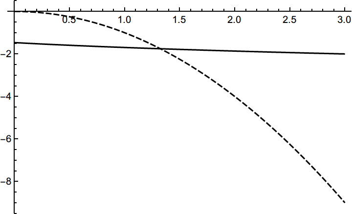

嵌套数值计算
抽象描述
如果通过数值计算功能定义一个函数，然后再将这个函数用于下一次数值计算，会产生“函数值不是数值”的消息。
具体例子
yRoot[x_] := y /. FindRoot[y^3 + y^2 + 1 + x == 0, {y, -1}] Plot[yRoot[x], {x,0,3}, PlotTheme -> "Monochrome"]
定义 函数的值是含参方程 在 附近的那个根。上述代码中的定义在 的范围内都有效地给出了我们想要的那个连续变化的根：

从下图可以看到关于 函数的方程 显然在 有解：
Plot[{yRoot[x], -x^2}, {x, 0, 3}, PlotTheme -> "Monochrome"]

现在尝试用 FindRoot 找到这个解：
FindRoot[x^2 + yRoot[x] == 0, {x, 3, 0, 3}]
结果产生了消息 FindRoot::nlnum ：
"The function value {1. +x} is not a list of numbers with dimensions {1} at {y} = {-1.}."
这个消息表明，在一次 FindRoot 的求解中，当 时，要搜索根的表达式计算得到了非数值的结果 1.+x 。不难猜到，这个 1.+x 就是 时的 ，说明在某次计算yRoot[x]时，x没有取具体的数值而仍然是一个符号。
解决方案
此问题在这里不是致命的，即便会输出消息，你得到的结果仍是同样可靠的，所以保持原样也算是解决方案。
如果不想看到警告消息，可以采用以下方案：
方案1
yRoot[x_] := y /. FindRoot[y^3 + y^2 + 1 + x == 0, {y, -1}] FindRoot[x^2 + yRoot[x] == 0, {x, 3, 0, 3}, Evaluated -> False]
方案2
yRoot[x_?NumericQ] := y /. FindRoot[y^3 + y^2 + 1 + x == 0, {y, -1}] FindRoot[x^2 + yRoot[x] == 0, {x, 3, 0, 3}]
原理解释
FindRoot 的行为
FindRoot 具有 HoldAll 属性，它拿到的表达式是未经计算的，所以它在接受参数这一步并不会因为计算 yRoot[x] 而出错。但如果选项 Evaluated 被设为 True ，就会先计算方程，然后用计算结果参与迭代数值求解。 Evaluated 选项默认为 True ，所以用户没专门指定的时候就会先计算 yRoot[x] 而出错。
FindRoot[expr, ...] 的行为是：
- 如果
Evaluated -> True，则计算expr，然后计算类似FindRoot[expr, ..., Evalauted -> False]的表达式。 - 如果
expr是方程，则通过移项使一端为0，移项的过程中会保持所有加数不计算，仅有expr_-expr_ :> 0这样的简单规则会生效。 - 根据指定的
Method送往FindRoot`Newton之类的函数进行数值迭代。
关于以上说明的正确性，可以参考此例：
test[x_?NumericQ] := x^2+1 test[x_] := x^3+1 Trace[FindRoot[test[x] == 1+1-1, {x,0,0,3}], TraceInternal -> True] Trace[FindRoot[test[x] == 1+1-1, {x,0,0,3}, Evaluated -> False],TraceInternal -> True]
解决方案的原理
消息的产生是因为试图求解含未定参数的表达式的零点，所以要么阻止在计算 FindRoot[yRoot[x]+x^2 == 0, ...] 时计算 yRoot[x] ，要么阻止在计算 yRoot[x] 时计算 FindRoot[y^3+y^2+x+1 == 0, ...] 。